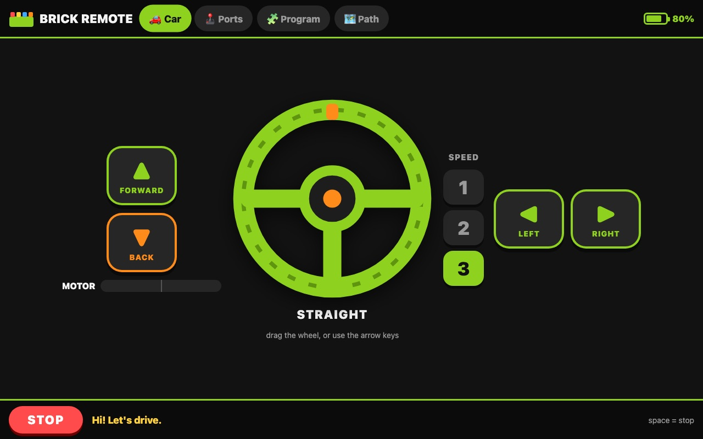
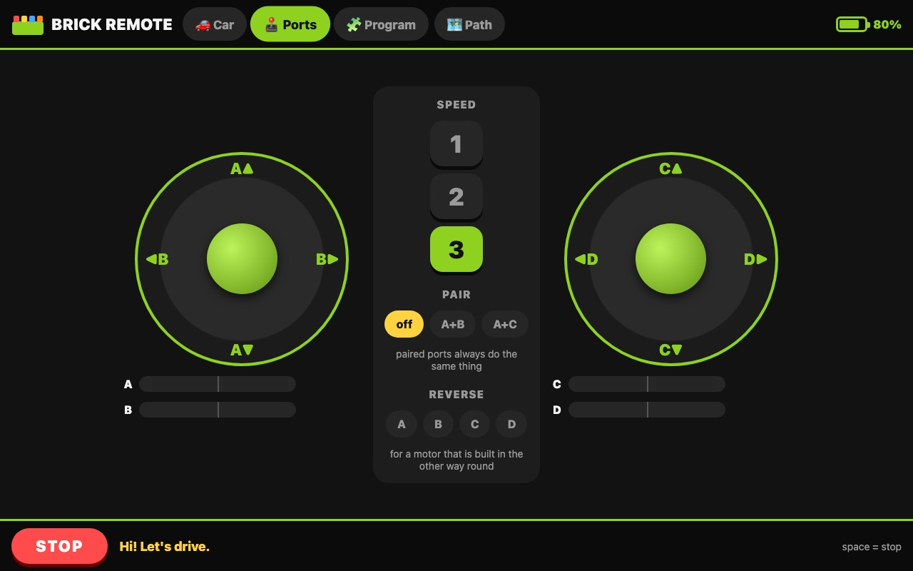
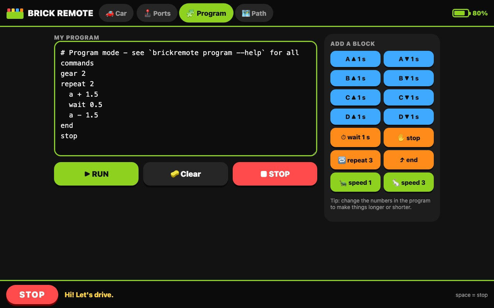
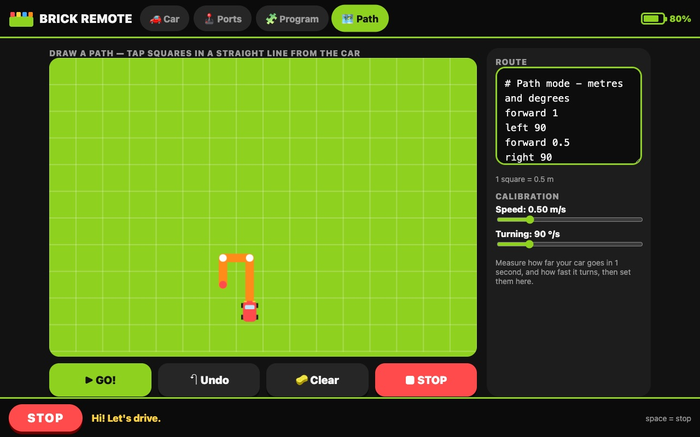

Drive your building-block car with a computer or a tablet. Steer it, race it, teach it to dance, or draw a road for it to follow!

Just three things.
The battery box with motor plugs A, B, C and D. It usually comes with the XP Block app and says "Smart creative module" in the leaflet.
With Bluetooth: a Raspberry Pi, a laptop or a desktop. A tablet or phone can be the remote too.
Just for the first setup. After that, you're the driver!
Steps 1 and 2 only happen once.
Install it with Python:
pip install "brickremote[web]"
Or download the code and use ./run.sh, which sets everything up by itself the first time.
Plug the driving motor into port A and the steering motor into port D. That's how the ready-made car in the box is built.
Press the power button. The light starts blinking: it's waiting for you!
brickremote web
Open the address it shows in a web browser. On a tablet, use the one that ends in :8080. When the brick is found, the light stops blinking and you can drive!
Like typing more than clicking? Just run brickremote for the keyboard version.
Switch between them with the buttons at the top.
Hold FORWARD to go, and turn the steering wheel. Let go and the wheel springs back to the middle, just like a real car.

Built a crane, a robot or a tank? Two joysticks control all four motors, one for A and B, one for C and D.

Tap the coloured blocks to build a list of moves, then press RUN and watch your creation do it all by itself.

Tap squares on the grid to draw where the car should go. Each square is half a metre. Press GO! and off it drives.
Copy one into the Program screen and press RUN. Then change the numbers and see what happens!
Forward and back, again and again.
gear 2 repeat 4 a + 0.5 a - 0.5 end
Steer hard and drive in circles.
repeat 3 d + # steer left and keep it there a + 2 # drive for 2 seconds stop wait 0.5 end
The tortoise and the hare.
gear 1 a + 2 gear 3 a + 1 stop
For the keyboard version (brickremote). Most of them work in the web version too.
The big red STOP button (or the space bar) stops every motor straight away. Drive on the floor, not on the table, and keep fingers away from turning wheels and gears.
Brick Remote is free, open-source software (MIT licence). It works with the low-cost Bluetooth LE motor modules that advertise as JG_JMC-xxxx and are normally used with the XP Block phone app. It runs on Linux (including Raspberry Pi), macOS and Windows.
It is also a small Python library, if you want to build your own projects:
import asyncio
from brickremote import JMCModule
async def main():
async with JMCModule() as m:
await m.run(2, a=255) # port A forward for 2 seconds
asyncio.run(main())
Code, protocol notes and the full command reference are in the project on GitHub.